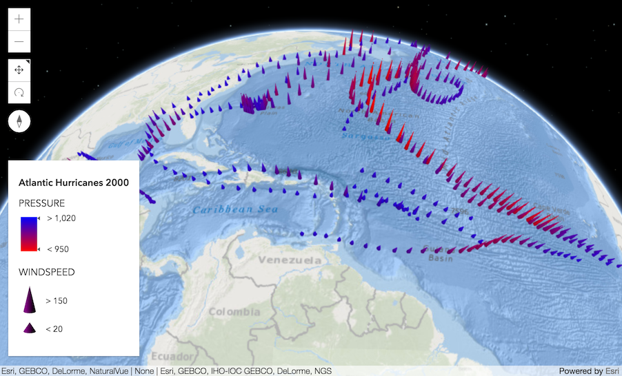
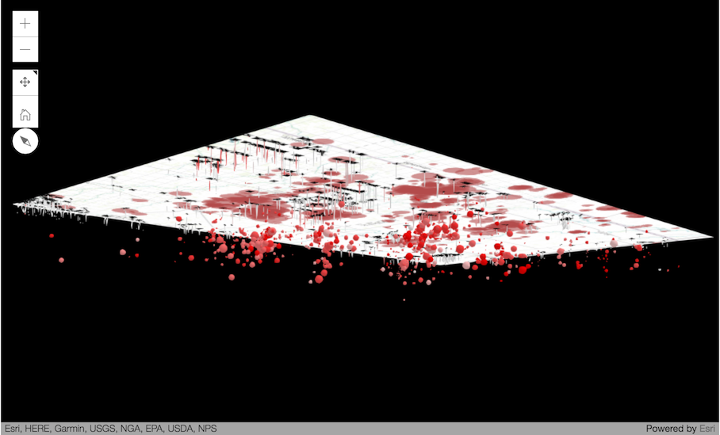
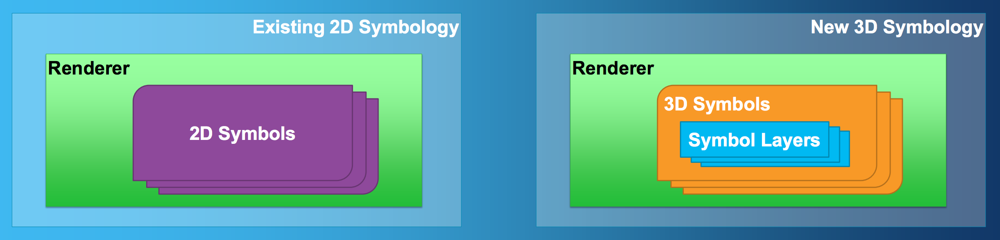
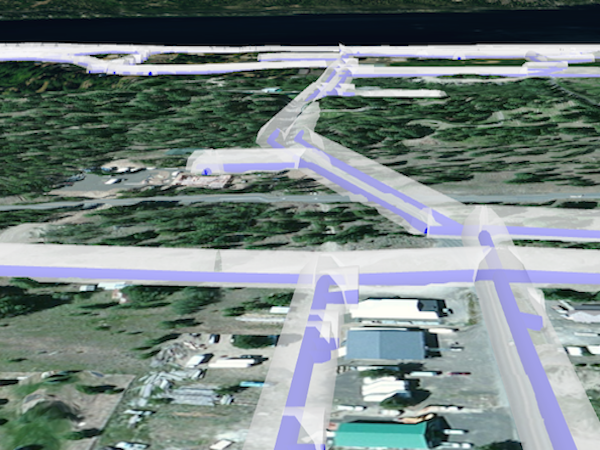
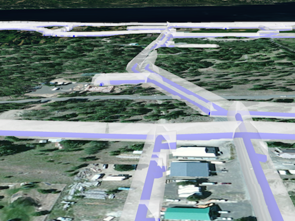
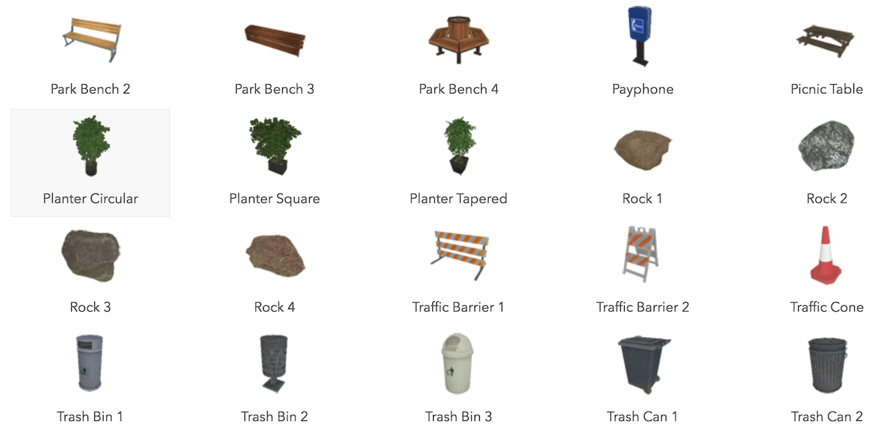

Working in 3D in the ArcGIS API for JavaScript
Jesse van den Kieboom, ESRI R&D Center Zürich
Adrian Blumer, ESRI R&D Center Zürich
Esri Developer SummitPalm Springs, CA | March 2017
Important notice
These slides contain dynamic code snippets that can be viewed online. See https://arcgis.github.io/presentations-devsummit-2017/working-in-3d.
SceneView
Working with the SceneView
Start with a 2D map/view, replace MapView with SceneView
view = new MapView({
container: "viewDiv",
map: new Map({
basemap: "streets",
layers: [new FeatureLayer(
"...USA_Census_Free_and_Clear_Housing/MapServer"
)]
})
});
view = new SceneView({
container: "viewDiv",
map: new Map({
basemap: "streets",
layers: [new FeatureLayer(
"...USA_Census_Free_and_Clear_Housing/MapServer"
)]
})
});
Working with the SceneView
Working with the SceneView
class SceneView {
// Camera specifies the view
camera: Camera;
goTo(...);
// Settings that affect constraints (e.g. navigation constraints)
constraints: SceneViewConstraints;
// Padding on the view
padding: { top: number, right: number, bottom: number, left: number };
// Converting coordinate systems
toScreen(mapPoint: Point): ScreenPoint;
toMap(screenPoint: ScreenPoint): Point;
}Working with the SceneView — Camera
- Primary specification of the view is the
Camera
class Camera {
// The position of the camera eye in 3D space (x, y + z elevation)
position: Point;
// The heading angle (towards north in degrees, [0, 360]°)
heading: number;
// The tilt angle ([0, 180]°, with 0° straight down, 90° horizontal)
tilt: number;
}Working with the SceneView — Camera
const camera = view.camera.clone();
// Increment the heading of the camera by 5 degrees
camera.heading += 5;
// Set the modified camera on the view
view.camera = camera;
Working with the SceneView — goTo
const h = view.camera.heading;
// Set the heading of the view to
// the closest multiple of 30 degrees
const heading = Math.floor(h / 30) * 30 + 30;
// go to heading preserves view.center
view.goTo({
heading: heading
});
Animation options:
const h = view.camera.heading;
// Set the heading of the view to
// the closest multiple of 120 degrees
const heading = Math.floor(h / 120) * 120 + 120;
const target = {
heading: heading
};
const options = {
easing: "out-cubic",
speedFactor: 0.2
};
view.goTo(target, options);
Working with the SceneView — padding
- Can be used to focus on a part of the view
- Primarily affects ui and navigation
// Set the padding to account
// for the space taken up by the sidebar and header
view.padding = {
top: 50,
left: 250
};
Working with the SceneView — toMap/toScreen/hitTest
view = new SceneView({
map: new Map({
basemap: "satellite"
})
});
for (var x = 1; x <= 2; x++) {
for (var y = 1; y <= 2; y++) {
var px = x ∗ (view.width / 3);
var py = y ∗ (view.height / 3);
view.graphics.add(new Graphic({
geometry: view.toMap(px, py),
symbol: symbol,
attributes: { x: x, y: y }
}));
}
}view.on("pointer-move", event => {
view.hitTest({ x: event.x, y: event.y })
.then(result => {
var graphic = result.results[0] &&
result.results[0].graphic;
var attrs = graphic && graphic.attributes;
if (attrs) {
logDiv.textContent = `${attrs.x}/${attrs.y}`;
}
});
});
WebScene
WebScene
- Defines the content and style of a 3D Scene
- Serialized as JSON and stored in Portal/Online
WebScene — Specification
- JSON spec similar to WebMap
- Layers, basemap, slides, initial state (position and light)
- Metadata: scene type, spatial reference, version...
- https://developers.arcgis.com/web-scene-specification/
WebScene — API
class WebScene extends Map {
presentation: {
slides: Collection<Slide>;
};
initialViewProperties: {
viewpoint: Viewpoint;
environment: Environment;
spatialReference: SpatialReference;
viewingMode: "global" | "local";
};
portalItem: PortalItem;
clippingArea: Extent;
clippingEnabled: boolean;
}WebScene — Platform
- SceneViewer & Pro
- Templates
- Web AppBuilder
- Story Maps
- API and SDKs
WebScene — Reading
view = new SceneView({
container: "viewDiv",
map: new WebScene({
portalItem: {
id: "3a9976baef9240ab8645ee25c7e9c096"
}
})
});
var layerList = new LayerList({
view: view,
container: document.createElement("div")
});
var layerListExpand = new Expand({
view: view,
content: layerList.domNode,
expandIconClass: "esri-icon-visible",
expanded: true
});
view.ui.add(layerListExpand, "top-right");view = new SceneView({
slideDiv.addEventListener("click", () => {
slide.applyTo(view);
});
WebScene — Saving
const scene = view.map;
const layer = scene.layers.find(layer => {
return layer.title === "Sun Exposure at 10:45";
});
scene.remove(layer);
const scene = view.map;
const presentation = scene.presentation;
Slide.createFrom(view).then(slide => {
slide.title = { text: "Created slide" };
presentation.slides.insert(slide, 0);
});
scene.updateFrom(view)
.then(() => {
return scene.saveAs({
title: scene.title + " Demo Copy",
portal: portal
});
})
.then(item => {
const itemPageUrl = portal.url +
"/home/item.html?id=" + item.id;
window.open(itemPageUrl, "_blank");
});
WebScene — viewingMode
| Global | Local |
|---|---|
| geographic, global extent, spherical | projected, local extent, planar |
|  |  |
WebScene — basemap and ground
Basemap
- same as 2D basemap
Ground: defines the ground surface of the scene
- elevation layers
- surface properties (coming later)
- default world elevation layer
Layer Types
Feature Layers
- As you know them from 2D
- Elevation Info
- mode:
on-the-ground,relative-to-ground,absolute-height
- mode:
Feature Layers and Elevation Info
// all the typical initialization
var map = new Map(...);
var view = new SceneView(...);
// Create FeatureLayer, set the elevation mode
// and add to the map
var layer = new FeatureLayer({
url: "https://services.arcgis.com/.../USA_Major_Cities/...",
definitionExpression: "POP2007 > 50000",
elevationInfo: {
mode: "relative-to-ground",
offset: 10000
}
});
map.add(layer);
// update elevation mode and offset
layer.elevationInfo = {
mode: "relative-to-ground",
offset: 100 // meters
};
Feature Editing
// all the typical initialization
var map = new Map(...);
var view = new SceneView(...);
//add an editable featurelayer from portal
Layer.fromPortalItem({
portalItem: {
id: "511b97fc0d364367b127f8ba5c89ad13"
}
}).then((featureLayer) => { map.add(featureLayer); })
// move camera
var point = new Point({
latitude: 33.82595255365376,
longitude: -116.5380549055525
});
view.goTo(point);
// add feature from code
var graphic = new Graphic({
geometry: point,
attributes: {
"Incident_Desc": "Devsummit!",
"Incident_Address": "hello@world.com"
}
});
featureLayer.applyEdits({
addFeatures: [graphic],
});
Elevation Layers
Elevation services
- Tiled image service
- LERC format (Limited Error Raster Compression)
Layer type: esri/layers/ElevationLayer
elevationLayer.queryElevation(...)
Added to
map.ground.layers- Multiple elevation layers overlay just as map layers do
map.ground.queryElevation(...)
Elevation Layers
var map = new Map({
basemap: "satellite",
ground: "world-elevation" // use default world elevation layer
});
// load an additional elevation layer depicting the
// elevation difference after the 2014 Oso landslide
var elevationLayer = new ElevationLayer({
url: "https://.../OsoLandslide_After_3DTerrain/ImageServer",
visible: false
});
map.ground.layers.add(elevationLayer);
var view = new SceneView(...);
// toggle the elevation layer visiblity
elevationLayer.visible = !elevationLayer.visible
// query elevation at the clicked map point
view.on("click", function(event) {
var position = event.mapPoint;
var query = elevationLayer.queryElevation(position);
query.then((result) => {
console.log(result.geometry.z)
});
});
Scene Layers
- 3D equivalent of the Feature Layer
- Supports
- points
- meshes
Point Scene Layer
// all the typical initialization
var map = new Map(...);
var view = new SceneView(...);
// Create SceneLayer and add to the map
var sceneLayer = new SceneLayer({
url: "http://tiles.arcgis.com/.../Airports_PointSceneLayer/...",
});
map.add(sceneLayer);
Mesh Scene Layer
// all the typical initialization
var map = new Map(...);
var view = new SceneView(...);
// Create SceneLayer and add to the map
var sceneLayer = new SceneLayer({
url: "https://tiles.arcgis.com/tiles/.../NYCatt/SceneServer",
});
map.add(sceneLayer);
Scene Layer Filtering
// all the typical initialization
var map = new Map(...);
var view = new SceneView(...);
// Create SceneLayer and add to the map
var sceneLayer = new SceneLayer({
url: "https://tiles.arcgis.com/tiles/.../NYCatt/SceneServer",
});
map.add(sceneLayer);
// only show buildings constructed before 1900
sceneLayer.definitionExpression =
"CNSTRCT_YR < 1900 AND CNSTRCT_YR > 0";
// reset filter
sceneLayer.definitionExpression = null;
// filter out tall buildings
sceneLayer.definitionExpression =
"HEIGHTROOF < 100 AND HEIGHTROOF > 0";
Scene Layer Query
// the scene layer we are working with
// filtering a specific building
officeLayer.definitionExpression = "BUILDING = 'Q'"
// create the query on the officeLayer
// based on its definitionExpression
var query = officeLayer.createQuery();
query.outFields = ["SPACETYPE"];
// query the layer
officeLayer.queryFeatures(query).then((results) => {
var typesCounter = {};
var othersCounter = 0;
// count the types of all the features
// returned from the query
results.features.forEach((feature) => {
var spaceType = feature.attributes.SPACETYPE;
if (typesCounter[spaceType]) {
typesCounter[spaceType]++;
} else {
typesCounter[spaceType] = 1;
}
});
// set the results in the legend
...
});
Integrated Mesh Layer
// create the integrated mesh layer
var layer = new IntegratedMeshLayer({
url: "http://tiles.arcgis.com/tiles/.../Oxford_Scene/..."
});
// create a map with the layer added
var map = new Map({
basemap: "streets",
layers: [layer],
ground: "world-elevation"
});
// finally, create a view with a good
// perspective on the integrated mesh
var view = new SceneView({
container: "viewDiv",
map: map,
camera: {
position: [-1.2567, 51.7517, 123.6058],
heading: 41.4698,
tilt: 75.9609
}
});
Point Cloud Layer
// all the typical initialization
var map = new Map(...);
var view = new SceneView(...);
// create Point Cloud Layer
var pcLayer = new PointCloudLayer({
url: "http://tiles.arcgis.com/.../BARNEGAT_BAY_LiDAR_UTM/..."
});
map.add(pcLayer);
// update the render settings
function updateRenderer(pointSize, density) {
pcLayer.renderer = new PointCloudRGBRenderer({
field: "RGB",
pointSizeAlgorithm: {
type: "fixed-size",
useRealWorldSymbolSizes: false,
size: pSize
},
pointsPerInch: density
})
}
More Layers
TileLayer/VectorTileLayer
- for ArcGIS cached tile services
WebTileLayer
- Non-ArcGIS Server map tiles, using url template
MapImageLayer (dynamic layer)
- ArcGIS map services (export image)
Visualization and symbology
Visualization and symbology
- Visualization is data-driven
- Thematic (population, donations, earnings, votes, etc.)
- Location-based (Where is it? What does it look like?)
Visualization and symbology — Symbols
- All symbols act as containers for symbol layers
- Symbol layers define the visualization
- A 3D symbol must have at least one symbol layer

Visualization and symbology — Symbol layers
(flat) IconSymbol3DLayer - LineSymbol3DLayer - FillSymbol3DLayer


(volumetric) ObjectSymbol3DLayer - PathSymbol3DLayer - ExtrudeSymbol3DLayer
 


Visualization and symbology — WebStyleSymbol

const webStyleSymbol = new WebStyleSymbol({
name: "Traffic_Barrier_1",
styleName: "EsriRealisticStreetSceneStyle"
});